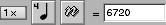
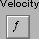
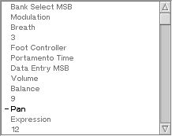

This section describes the controls you'll encounter, and should be used as a reference as you work with Sequitur.
| C.1. The Knob Control |
| C.2. The Number Control |
You can perform precise editing by clicking the control and waiting several moments. A text box will appear that allows you to type in the desired value. You can also invoke this text box by pressing space when the control has focus.
Sequitur often makes use of a class of controls that are segmented, which allows quick access to common values and still provides easy access to not-so-common values. These controls are all operated by clicking, holding, then dragging left / right or up / down. When you click on a band control, a bar will appear that displays the possible values for the control, along with a window displaying the current numeric value. As you drag over the bar, you'll notice that the number display moves rapidly in some places and not at all in others. The areas where it doesn't move are the values determined to be the most useful in practice. The areas inbetween these values, where the number changes rapidly, still allow you to choose a non-standard value.
| C.3.1. The Zoom Control | |
| C.3.2. The Duration Control |  |
The duration control can optionally be displayed without either its multiplier or raw time controls. For example, the Quantize filter in the track window uses such a control to set both the duration of newly created notes and the snap-to grid.
| C.3.3. The Velocity Control |  |
| C.4. The Control Change Control |  |
This control is used by the property window of certain filters.